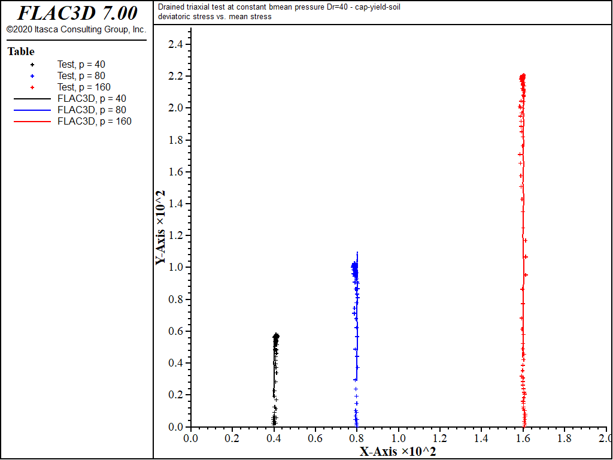
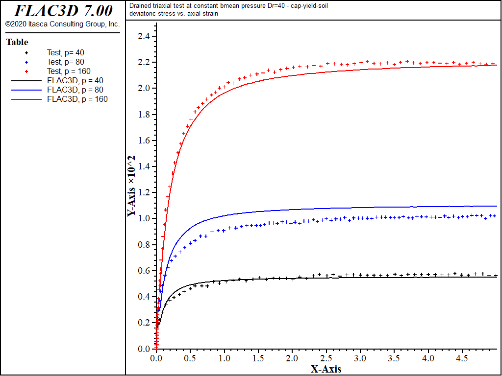
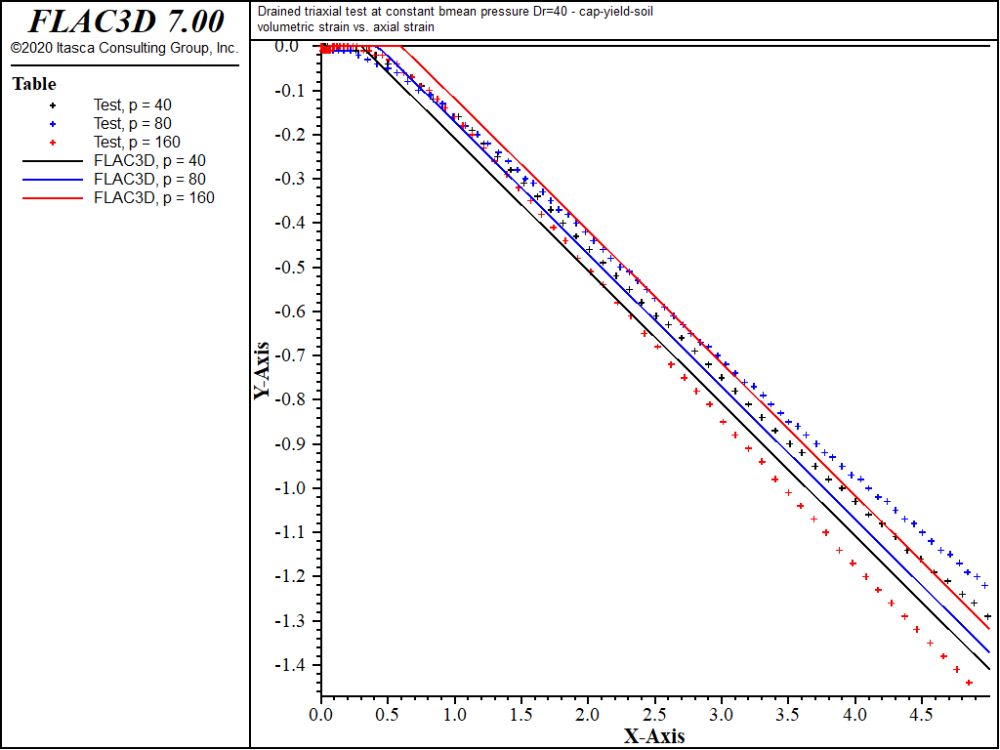

FLAC3D Theory and Background • Constitutive Models
采用简化帽盖-屈服（CHSoil）模型的排水三轴压缩试验
注意
要在 FLAC3D 中查看此项目，请使用菜单命令 。 选择“ConstitutiveModels/ DrainedTriaxialCHSoil”并选择“DrainedTriaxialCHSoil.f3dprj”以加载。 该项目的主数据文件见本示例末尾（main data file）。
使用 CHSoil 模型（CHSoil model）在三个恒定平均应力水平（40、80 和 160 kPa）下对 \(D_r\) = 40% 的砂进行数值三轴试验。 数值试验过程中采用伺服控制以保持平均应力恒定。
使用模型特性的估计值进行数值试验， 并将试验结果与现有的实验室数据（以表格形式导入 FLAC3D）进行比较。 调整特性（参见标定一节（section on calibration））， 并重复数值试验，直到获得令人满意的曲线拟合。
曲线拟合试验的结果列于表 1（Table 1）。
| \(D_r\) | \(E_{ref}\) | \(\nu\) | \(\phi_f\) | \(\psi_f\) | \(\phi_{cv}\) | \(m\) | \(n\) |
| 40% | 1800 | 0.35 | 34° | 7.5° | 28° | 0.5 | 0.5 |
使用标定后特性的数值预测与实验室结果的比较示于 图 1（Figure 1）至图 3（Figure 3）。 请注意，这些图中采用土力学惯例，即应力/应变的正方向为正。 （剪胀为负。）比较结果相当合理。


图 1：\(D_r\) = 40% 时偏应力与平均应力的关系——实验室结果（线）与数值结果（十字）的比较。


图 2：\(D_r\) = 40% 时偏应力与轴向应变（%）的关系——实验室结果（线）与数值结果（十字）的比较。


图 3：\(D_r\) = 40% 时体积应变（%）与轴向应变（%）的关系——实验室结果（线）与数值结果（十字）的比较。
数据文件
DrainedTriaxialCHSoil.dat
model new
model title ...
'Drained triaxial test at constant bmean pressure Dr=40 - cap-yield-soil'
model large-strain off
fish automatic-create off
;
zone create brick size 1 1 5
zone cmodel assign cap-yield-simplified
zone property young-reference=1800 poisson=0.35 pressure-reference=100.0
zone property failure-ratio=0.99 friction=34.0 exponent-bulk=0.5 ...
exponent-shear=0.5
zone property density=1000. cohesion=0.0 dilation-mobilized=0.0 ...
friction-mobilized=0.0
zone property flag-dilation=2 friction-critical=28.0 dilation=7.5
zone property pressure-initial= 40.0 range id = 1
zone property pressure-initial= 80.0 range id = 3
zone property pressure-initial=160.0 range id = 5
;
zone cmodel assign null range id-list = 2, 4
;
zone initialize stress xx -40.0 yy -40.0 zz -40.0 range id = 1
zone initialize stress xx -80.0 yy -80.0 zz -80.0 range id = 3
zone initialize stress xx -160.0 yy -160.0 zz -160.0 range id = 5
;
zone gridpoint fix velocity
zone gridpoint initialize velocity-x 0.25e-6 range position-x 1.0
zone gridpoint initialize velocity-y 0.25e-6 range position-y 1.0
zone gridpoint initialize velocity-z -0.5e-6 range union position-z 1.0 ...
position-z 3.0 position-z 5.0
;
[global z1 = zone.near(0.5,0.5,0.5)]
[global z3 = zone.near(0.5,0.5,2.5)]
[global z5 = zone.near(0.5,0.5,4.5)]
;
program call 'servo'
;
fish history q1
fish history p1
fish history eps_v1 ; 体积应变 (%)，剪胀为正
fish history eps_a1 ; 轴向应变 (%)
fish history q2
fish history p2
fish history eps_v2 ; 体积应变 (%)，剪胀为正
fish history eps_a2 ; 轴向应变 (%)
fish history q3
fish history p3
fish history eps_v3 ; 体积应变 (%)，剪胀为正
fish history eps_a3 ; 轴向应变 (%)
history interval 1000
model step 100000
model save 'chsoil-dtriax1'
⇐ Undrained Triaxial Test with CYSoil Model | Comparison between Mohr-Coulomb Model and Plastic-Hardening model ⇒
| 这些内容对您有帮助吗？… 版权与免责声明 |
FLAC3D © 2019, Itasca | 原文更新于 2020 年 10 月 8 日 |